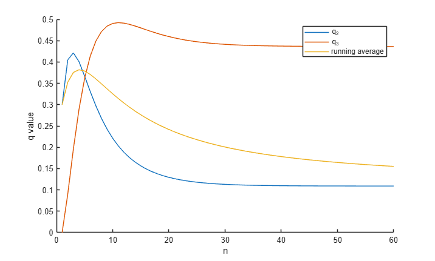

Contents
clc
clear
close all
Problem 1
%b) clc clear a=.3; b=.1; delta_0=[1,0,0,0,0]; p_1=zeros(5,5); p_1(1,1)=1-a; p_1(1,2)=a; for i=2:4 p_1(i,i+1)=a.*(4-i)./i; p_1(i,i-1)=b.*i./4; p_1(i,i)=1-p_1(i,i+1)-p_1(i,i-1); end p_1 q_50=delta_0*(p_1^50) q_51=delta_0*(p_1^51) n=1:60; for i=1:60 q=delta_0*(p_1^i); q_2(i)=q(2); q_3(i)=q(3); q_ave_2(i)=mean(q_2); end [V,lambda]=eig(p_1) figure hold on plot(n,q_2) plot(n,q_3) plot(n,q_ave_2) legend('q_2','q_3','running average') xlabel('n') ylabel('q value') hold off for i=0:4 pi(i+1)=((.25).^(4-i)).*((3./4).^i).*factorial(4)./(factorial(i).*factorial(4-i)) end
p_1 =
0.7000 0.3000 0 0 0
0.0500 0.6500 0.3000 0 0
0 0.0750 0.8250 0.1000 0
0 0 0.1000 0.9000 0
0 0 0 0 0
q_50 =
0.0182 0.1092 0.4366 0.4360 0
q_51 =
0.0182 0.1092 0.4365 0.4360 0
V =
0.8237 0.9829 -0.8485 0.5000 0
-0.5491 0.0819 -0.4243 0.5000 0
0.1373 -0.1433 -0.1414 0.5000 0
-0.0343 0.0819 0.2828 0.5000 0
0 0 0 0 1.0000
lambda =
0.5000 0 0 0 0
0 0.7250 0 0 0
0 0 0.8500 0 0
0 0 0 1.0000 0
0 0 0 0 0
pi =
0.0039
pi =
0.0039 0.0469
pi =
0.0039 0.0469 0.2109
pi =
0.0039 0.0469 0.2109 0.4219
pi =
0.0039 0.0469 0.2109 0.4219 0.3164

Problem 3
a)
p_a=mat_p(1); %Checking p_test=mat_p(.6); %Testing q_0=[1,1,1,1,1,1,1,1]./8; q_100=q_0*(p_a^100) q_101=q_0*(p_a^101) %does not converge %{ q_100_test=q_0*(p_test^100) q_101_test=q_0*(p_test^101) %converges %} %b d=.85 p=mat_p(d) diff=1; n=1; q_n1=q_0; while diff>10e-6 q_n=q_n1; q_n1=q_n*p; diff=mean(abs(q_n1-q_n)) n=n+1; if n>1000 break end end q_n q_n1 n % c) %{ function [y,t]=discrete(U,t,p,i) V=rand(1); t=t+1; steps(1)=p(i,1); for j=1:8 steps(j+1)=steps(j)+p(i,j); end if U<=steps(1) [y,t]=discrete(V,t,p,i); elseif U<=steps(2) [y,t]=discrete(V,t,p,i); elseif U<=steps(3) [y,t]=discrete(V,t,p,i); elseif U<=steps(4) [y,t]=discrete(V,t,p,i); elseif U<=steps(5) [y,t]=discrete(V,t,p,i); elseif U<=steps(6) [y,t]=discrete(V,t,p,i); elseif U<=steps(7) [y,t]=discrete(V,t,p,i); else [y,t]=discrete(V,t,p,i); end end %} function p=mat_p(d) p=[0,d./2,d./2,0,0,0,0,0;0,0,0,d,0,0,0,0;d./2,0,0,0,d./2,0,0,0;d./3,0,d./3,0,d./3,0,0,0;0,d./3,0,0,0,d./3,d./3,0;0,0,0,0,0,d,0,0;0,0,0,0,0,0,0,d;0,0,0,0,0,0,d,0]; p=p+(1-d)./8; end %{ function steps=discete(P,t) [m,n]=size(P); steps=zeros(n,1); for k=1:t for i=1:m s=zeros(n,1); V=rand(1); j=1; while j<n+1 if V>s(j,1) s(j,1)=P(i,j)+s(j,1); j=j+1; else steps(j,1)=steps(j,1)+1; break end end end end end %} function x=inverse_transform(P,X) end
q_100 =
Columns 1 through 7
0.0000 0.0000 0.0000 0.0000 0.0000 0.4375 0.2695
Column 8
0.2930
q_101 =
Columns 1 through 7
0.0000 0.0000 0.0000 0.0000 0.0000 0.4375 0.2930
Column 8
0.2695
d =
0.8500
p =
Columns 1 through 7
0.0188 0.4437 0.4437 0.0188 0.0188 0.0188 0.0188
0.0188 0.0188 0.0188 0.8688 0.0188 0.0188 0.0188
0.4437 0.0188 0.0188 0.0188 0.4437 0.0188 0.0188
0.3021 0.0188 0.3021 0.0188 0.3021 0.0188 0.0188
0.0188 0.3021 0.0188 0.0188 0.0188 0.3021 0.3021
0.0188 0.0188 0.0188 0.0188 0.0188 0.8688 0.0188
0.0188 0.0188 0.0188 0.0188 0.0188 0.0188 0.0188
0.0188 0.0188 0.0188 0.0188 0.0188 0.0188 0.8688
Column 8
0.0188
0.0188
0.0188
0.0188
0.0188
0.0188
0.8688
0.0188
diff =
0.0177
diff =
0.0138
diff =
0.0107
diff =
0.0085
diff =
0.0064
diff =
0.0051
diff =
0.0040
diff =
0.0032
diff =
0.0025
diff =
0.0020
diff =
0.0016
diff =
0.0013
diff =
0.0010
diff =
8.6140e-04
diff =
6.9436e-04
diff =
5.7627e-04
diff =
4.6925e-04
diff =
3.9127e-04
diff =
3.2136e-04
diff =
2.6902e-04
diff =
2.2256e-04
diff =
1.8692e-04
diff =
1.5555e-04
diff =
1.3099e-04
diff =
1.0953e-04
diff =
9.2431e-05
diff =
7.7579e-05
diff =
6.5577e-05
diff =
5.5202e-05
diff =
4.6723e-05
diff =
3.9422e-05
diff =
3.3400e-05
diff =
2.8230e-05
diff =
2.3937e-05
diff =
2.0259e-05
diff =
1.7188e-05
diff =
1.4563e-05
diff =
1.2361e-05
diff =
1.0481e-05
diff =
8.8991e-06
q_n =
Columns 1 through 7
0.0707 0.0688 0.0707 0.0772 0.0707 0.2585 0.1972
Column 8
0.1863
q_n1 =
Columns 1 through 7
0.0707 0.0688 0.0707 0.0772 0.0707 0.2585 0.1971
Column 8
0.1863
n =
41